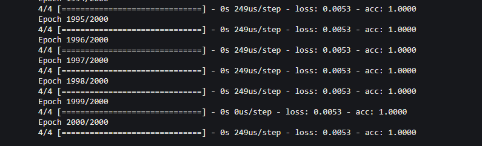
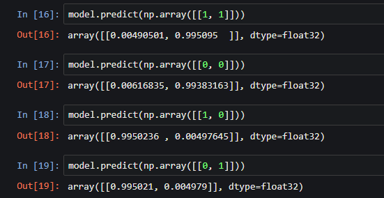
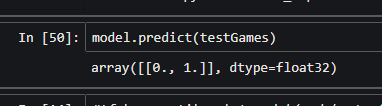

Neural Network Exploration 1 | Hello world!
I’ve been meaning to do research and experiment with Artificial Neural Networks (ANN’s) for a while and found some time to read up on them.
I also discovered a library called Keras which is a higher level api for Google’s AI library, Tensorflow. Ideally this should be less grunt work for a beginner like me.
I started out getting a simple feed forward neural network (NN) to solve the XOR question. XOR is famously a non-linearly separable problem and has a basic premise:
Given two inputs ( X1 and X2 ) , the output Y will only be true if ONLY one input is true. Mathematically it is written: X1 ⊕ X2 = Y.
After the success of the XOR NN, I made an attempt to make a NN which predicts a victory in one of my favorite games, League of Legends, given the post game stats as an input. This was interesting but ultimately not a success.
My tools
I used Anaconda to download all my dependencies and wrote everything in a Jupyter Notebook. As of the writing of this post, none of my notebooks are on my github, but I will likely change that soon.
Within Jupyter Notebook, I import tensorflow and keras and then create the model and feed it a simple array containing the truth table for XOR,
where the inputs are the typical inputs for a XOR gate and the output or labels are the result that you would get if those were inputs running through an XOR gate.
Setting up the Neural Net to solve XOR
For the XOR, I trained a NN using an array of arrays, each containing two elements.
# xor inputs
cases = [
[1,0], # == true
[0,1], # == true
[1,1], # == false
[0,0] # == false
]
This is the training data, representing the permutation of possible inputs, and below are the labels are outputs are represented by an array of arrays containing two elements where order matters.
# outputs
labels = [
[1, 0], # true
[1, 0], # true
[0, 1], # false
[0, 1] # false
]
Then I created a simple model with Keras:
model = tf.keras.models.Sequential()
model.add(tf.keras.layers.Flatten(input_shape=(2,)))
model.add(tf.keras.layers.Dense(25, activation=tf.nn.relu))
model.add(tf.keras.layers.Dense(2, activation=tf.nn.softmax, input_shape=(2,)))
Then I trained it with the above cases and inputs for 2000 iterations over the same training data. Probably a bit unnecessary, but it worked.
Thankfully, the network is small, and each epoch took almost no time at all and successfully predicted the output given two inputs.
Setup for the League of Legends ANN
Feeling rather confident in my abilities, I wanted to try and build a network
to predict my matches in League of legends. I played a few matches and recorded various stats after the game,
29 statistics to be specific.
The choice of what I recorded was somewhat random ( not well thought out ) as I just wanted to see if I
could throw a bunch of data about my games at a Neural Network and see what it would do.
This was a time consuming process as I haven’t played around with Riot’s api to automatically get data
from my games and instead recorded everything manually in a spreadsheet, an improvement for next time.
I experimented with a number of different activation functions and loss optimizers,
I tried adding a dropout layer which randomly “deletes” the connection from various
nodes by setting their weights to zero. This increases robustness and helps to ensure
the network doesn’t just memorize the dataset I’m training it on.
In the end, I tentatively hovered at around 60% getting to 63% in some cases, but any slight changes to the dataset or
NN would drop it to a terrible prediction rate. Overall, I found that most often it would almost immediately
stagnate at around 60% and not improve.
Not so great, somewhat better than a coin toss. Though, it did correctly predict my next match to be a loss.

There could be many reasons for this, the most likely being that, League of Legends is a complex game,
and I only had about 10 matches to train it on.
Furthermore, there is much more data to collect about
my matches ( some not related to league ), such as champion matchups, roles / lanes, lag or ping spikes,
how many lanes on my team won, did I get a lot of sleep, how many games of the champion I played during
a match have I played total, or even that week. You get the idea.
I would also like to find an easy way to view my NN visually, specifically
I would be interested in seeing the weights of the network.
I’ve read a little about Tensorboard and maybe will find my solution there.
More importantly however, I’d like to know what inputs or combinations of inputs have the biggest effect on the outcome of my matches.
Can I improve my own gameplay by focusing on these factors?
This was a fun experiment, and I will do more like this in the near future.
Thanks for reading.
Hunter